01 先从一个动作问题理解整个项目
KnowBody研究的是：让一个冻结的视觉语言模型直接决定机器人的末端位姿、夹爪开合与动作推进范围，并把过去的交互转化为以后真正用得上的经验。这里“冻结”指不更新主模型权重；机器人仍会观察、行动、保存证据、提炼经验，并在下一次决策时读到不同的材料。
最容易理解的例子是套杆。一个夹爪可以把带孔蓝块拿起来，却未必留下可见的孔；孔看得见，也未必已经对准杆；松开时看起来成功，撤手后又可能倾斜或失持。因此，值得留下的不是“某次手移动到某个坐标”，而是：在什么抓持关系下，怎样获取了哪些测量，试过什么组合，最后观察到什么，以及下一次应该在哪里重新检查。

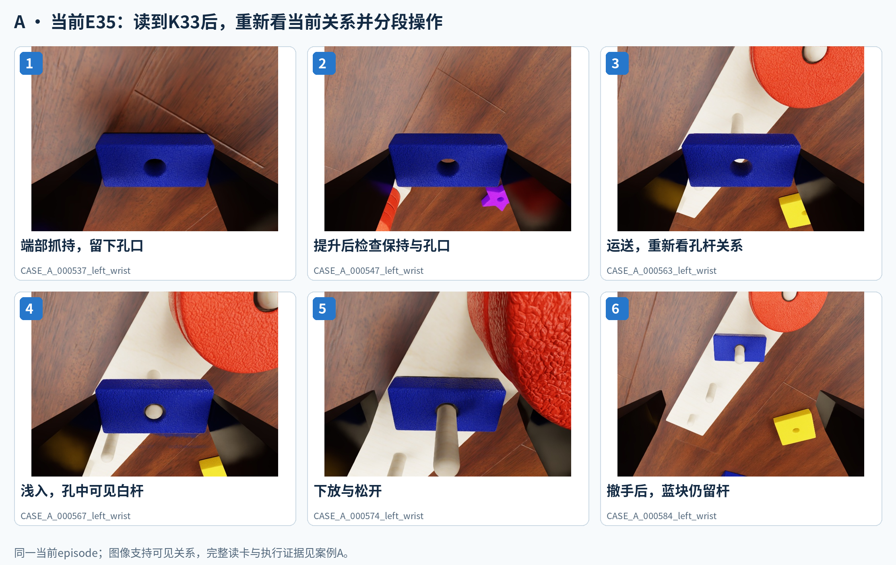
这份材料先解释系统的整体分工，再展开经验的组织、读取、管理和执行接口，最后沿三条实验线核对具体案例。真机演示负责呈现身体与工作点的直观关系；仿真案例负责呈现可追溯的经验读取、当前决策和物理反馈。两类素材在目录中有明确身份。
第一次接触项目：先读01–04和三个主案例A/B/C。准备画总图：读02、05–08和16。需要选择照片：打开素材库index.html，先看“精选”，再按任务、案例、相机和原始分辨率筛选。
02 宏观架构：两个模型，一条执行闭环
系统的中心是执行模型。它看当前图像和机器人实测状态，结合任务、会话内历史和选出的经验材料，决定下一个数值动作。经验管理没有接管这一职责：管理模型负责准备与整理信息，机器人执行接口负责将获准请求落实为动作并返回回执。

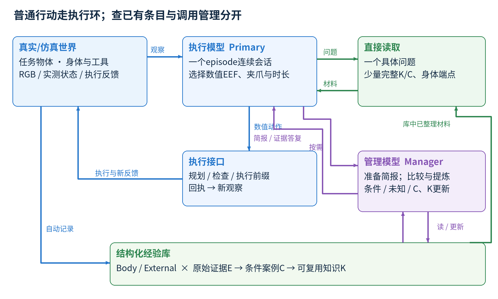
| 组件 | 输入与职责 | 返回的内容 |
|---|---|---|
| 执行模型 / primary | 任务、当前RGB、实测状态、原生会话历史、经验简报与查询结果 | 数值EEF目标/夹爪命令、计划执行时长；或查询、管理请求、观察请求 |
| 管理模型 / manager | 一个具体问题，必要的K/C/E来源和固定的事务范围 | 证据比较、条件与未知、候选操作/测量、案例和知识更新；不返回未来EEF坐标 |
| 宿主程序 / host | 工具请求、库快照、精确来源和配置 | 记录、检索、读取资格检查、版本绑定、组提交及调用记账 |
| 机器人侧执行接口 | 数值目标、当前关节与配置、路径检查 | 计划/拒绝、实际执行覆盖、执行后的测量和图像 |
普通动作可以直接推进。执行模型认为历史信息可能改变下一步动作时，直接查询整理好的经验；只有需要比较冲突、重新解释记录或整理一批新交互时，才提出一个小问题交给管理模型。主模型不需要先替管理模型列几十个轨迹ID。
当前仿真常规配置是GPT-6-astra/medium作为执行模型，GPT-6.1-Sol/xhigh作为管理模型。角色与实际模型分别记录；某些已授权资源策略可使用另一个模型承担管理角色，因此实验归因要以逐次日志为准。这里讨论的架构不依赖把两种角色绑定成同一个推理档位。
03 不同信息各有自己的生命期
“上下文”并不是一个不断增长的大总结。需要区分当前状态、一个episode内的连续思考、任务准备材料，以及跨episode积累的经验库。这样才能解释哪些信息应常驻，哪些必须刷新，哪些只在需要时读取。
| 信息 | 生命期与内容 | 更新方式 |
|---|---|---|
| 当前观察和实测状态 | 这一时刻的物体、EEF、夹爪和可见关系 | 新观察/执行反馈刷新；历史坐标不覆盖当前测量 |
| 主模型原生会话 | 一个episode内的任务推进、已读材料、工具返回 | 同一CLI会话连续使用；原生上下文可能压缩 |
| 任务准备简报 | 稳定的身体/交互关系、重要条件、限制、未知与查询入口 | 每任务开始组织；有效管理后可替换选中的材料 |
| 跨episode经验库 | E原始证据、C条件案例、K可复用知识与过程记录 | 证据追加，解释与知识按版本更新；每条实验线独立积累 |
| 管理事务的结论槽 | 同一逻辑episode内，上一次完整且有配对PASS回执的管理答复 | 只留一条，供后续非prepare管理问题参考；不进入主模型简报 |
例如，“这类端部抓持可留下孔口供后续测量”适合进入简报；“左手此刻稳定夹住了蓝块”必须依赖当前观察。即使之前的提升成功，也不能把后续运输、接触与松开后的保持当成已经知道的状态。
runtime37补上的管理连续性解决的是另一种重复：管理模型刚完成一次比较，后续被叫来却重新寻找同一个结论。现在宿主只带回一条来源明确、完整且配对成功的管理答复作为路由参考。旧答复不会继承原始图片读取权限，也不会自动获得写库权限；新问题仍需在自己的来源范围内读取必要证据。
04 经验库：两域组织，三层抽象，一个过程视图
经验库首先按“自身的身体关系”和“与外部物体的交互”组织。它们共享同一套证据层级，区别在于要回答的物理问题；不是两个互不相通、可以无条件跨本体迁移的文件夹。

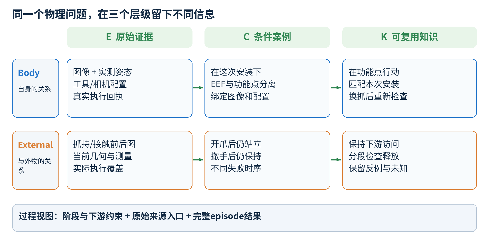
| 层级 | 保存什么 | 套杆例子 |
|---|---|---|
| E：原始证据 | 图像、测量、请求、计划/拒绝、实际回执、后观察 | 某次端部夹持前后的RGB、75个实际执行步的分段回执、当前面高测量 |
| C：条件案例 | 对具体观察或交互的解释，保留条件、实例量、来源及认知状态 | 一次浅入并松开后，空手撤离时蓝块仍在杆上；绑定真实前/回执/后 |
| K：可复用知识 | 一个可复用决策问题、条件化响应、用途、反馈边界、未知和来源关系 | 端部抓持保留孔口；重新测量当前孔杆与面高；分段进入并在撤手后复查 |
| 过程记录 | 任务阶段、跨阶段约束、真实轨迹入口、完整episode结果 | 早期抓持怎样影响后续转姿、入杆、释放；不是可直接执行的脚本 |
这些层级在磁盘上怎样落地
E/C/K是逻辑层级，当前实现不是把三类文字分别放进Body/External文件夹。SQLite保存版本化证据与关系，图片保持独立文件；domain/family/roles是检索入口，精确ID与revision负责追溯。这样，重新解释一次交互时可更新案例和知识，而原图与真实执行记录保持可查。
| 实际位置 / 表 | 承担的职责 |
|---|---|
| 每次run的observations/、events/与events.jsonl | 相机图片和按顺序发布的公开观测、动作、测量、回执等事件 |
| memory.sqlite：evidence、claims等 | E证据索引与C条件案例版本；原始图片由精确来源引用 |
| 同一SQLite：case_navigation、reusable_knowledge | Body/External及family/roles导航；K的问题、条件、用途、依赖与来源关系 |
| publication_groups、case_disposition、processed_intervals | 记录分组发布结果、案例如何处理、哪些真实执行区间已经整理 |
| management/、cli_calls.jsonl、report.json | 管理事务、模型调用与用量、episode结果；不作为普通每步决策的全文输入 |
| final_memory.sqlite与其manifest | 已封账episode的经验快照与出处，供后续实验链与复核使用 |
身体模块具体是什么
| 域 / family | 典型问题 | 需要保留的条件 |
|---|---|---|
| Body / frame_map | 命令位姿、法兰、抓持点分别是什么？ | 机体、命名控制点、坐标约定与单位 |
| Body / geometry | 指垫、末端与目标区域的几何关系是什么？ | 公开模型或实测来源、关节/夹爪状态 |
| Body / tool_mount | 功能点在哪里，相对夹爪怎样安装？ | 本次工具/抓持安装关系；换抓后重新检查 |
| Body / visual_action | 图像中的运动对应什么实际运动？ | 相机配置、视点、观测深度与局部有效范围 |
| External / scene_geometry | 工作面、孔口或目标之间是什么关系？ | 场景/实例、采样时刻、可见性与测量来源 |
| External / contact_response | 在这种接触关系下，动作后物体怎样响应？ | 接触区域、姿态、载荷/支持、实际执行与后观察 |
| External / retention_release | 抓持、运输、转姿和释放后是否保持？ | 夹持区域、相对姿态、运动阶段、释放和撤手的时序 |
Body知识自动包含机体配置依赖，还可依赖相机或工具安装；External知识也可能依赖机体、夹爪和执行接口。所谓跨本体复用，应当是重新核对这些依赖和当前关系后找到可参考部分，而不是把旧机械臂的坐标直接拷到新机械臂。
05 一条“有用经验”到底长什么样
一条条件案例描述某次发生了什么；一条知识回答未来遇到相似决策时应该考虑什么。提炼的目标是留下能改变动作、测量或观察边界的关系，同时把具体轨迹的坐标和细节留在可继续追查的案例中。
| 字段 | 读者应该得到什么 | K33的中文释义 |
|---|---|---|
| question | 这条经验解决哪个决策问题？ | 端部抓持、当前定位、面高和执行反馈，分别能区分什么？ |
| conditions | 哪些物理前提需要当前确认？ | E28左手蓝块端部对夹；孔口可见且提升/运送后保持。来自单条改变条件轨迹的组合候选 |
| text | 试过的操作组合及观察到的响应 | 看当前孔杆和非共线面高，修正关系，分段进入、松开、垂直撤手并检查 |
| use / feedback | 以后怎样用，什么反馈会推翻当前候选？ | 分别检查姿态、XY、物体相对手的高度与卸载结果；倾斜/失去孔杆持续关系就重评 |
| unknowns | 哪些解释仍未建立？ | 真实孔杆轴线、接触力、独立动作贡献、重复性 |
| sources / dependencies | 为什么能追溯，哪些配置不能忽略？ | 精确案例版本；body/cameras/depth/execution等历史来源配置 |
这张表是便于合作者理解的中文释义，不是向实验库写入的新卡片。实际完整记录位于evidence/selected_knowledge.json，案例A还保留了当时真正送达主模型的K33内容。K33的30条支持来源来自一条历史episode的不同片段，不是30次独立实验。
支持、反例和相关，三种边不能画成同一种箭头
support说明某个案例支持这条条件陈述；counter保留相反响应或争议；related只帮助找到值得比较的材料，不提供物理支持、参数值或配置值。当前默认简报会避开带显式反例、争议来源或已变化依赖的条目，但保留带警告的显式读取入口。
这里还必须分开两件事：宿主能够核对来源版本、公开配置和读取是否完整，却不能从两句条件文本相同就证明当前抓持成立。缺失或不同的物理描述仍作为未知交给主模型结合新观察判断；检索分数也不是物理可用概率。
06 从一个问题到少量完整材料：真实读取链
读取从这一次要解决的问题开始，而不是把所有“可能有关”的旧资料塞进主模型。问题可以是“转姿后是否有失持先例”“这种抓持是否留下入孔空间”“同一身体在附近有哪些实测端点”。它们分别走语义经验或数值身体证据入口。

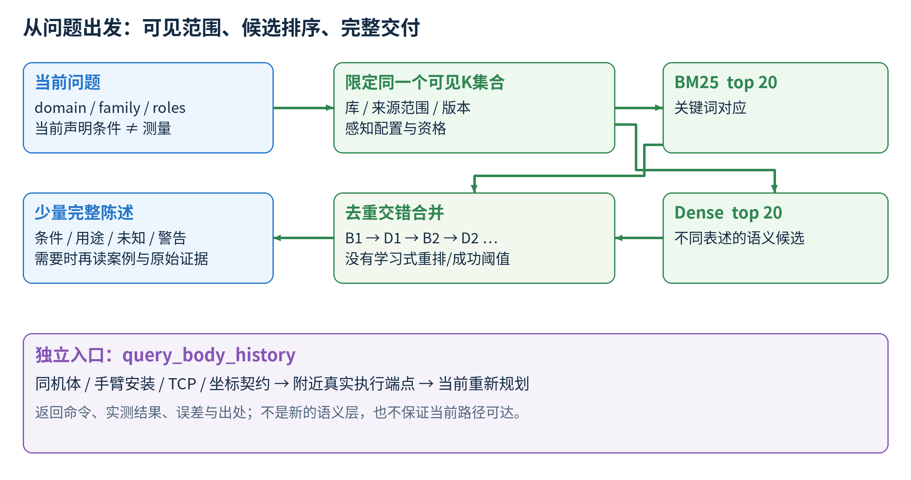
语义经验：先找候选，再判断当前能参考什么
问题可显式带domain、family和实际存在的角色标签。宿主先限定当前实验库、来源事件范围、版本和感知配置，再在同一可见K集合运行两条排序：BM25寻找关键词匹配，本地固定文本编码器寻找不同表述的语义候选。结果按关键词首项、语义首项、关键词第二项、语义第二项依序交错并去重。它没有学习式重排器，也没有用某个相似度阈值自动认证经验。
语义文本包含question、text、use、conditions、unknowns和参数；调用者声明的物理条件可补入查询，但不充当测量。动态资格、审计哈希不是语义索引内容。未知旧标签不会被猜成某个新物体身份，因此跨对象类比仍有被找到的机会。
普通读取默认在6000字节内给少量完整statement，保留条件、用途、参数、未知与警告。装得下单条但本包剩余空间不够时，整条留到续读；单条自身过大才提供精确分页入口。详细支持链放到detail按需查，不截断物理前提来假装简短。
数值身体历史：不用先变成文字K，也能被复用
query_body_history查找同一机体、手臂安装、命名控制点和坐标契约下的真实已执行端点，按目标附近的空间容差过滤，再按距离和姿态差异提供见证。返回命令、实测结果、误差和来源。它能说明“以前怎样实际到过附近”，但不能保证从当前关节姿态沿同一路径可达。案例B展示了这条路线的明确采用。
query_experience(question="端部抓持后，怎样检查转姿保持与孔口访问？",
domain="external", family="retention_release")
query_body_history(target=当前关心的区域, arm=当前手臂, tolerance_m=查询空间范围)上面的请求展示接口意图；具体字段和数值由当次工具说明及当前状态决定。已整理材料直接读；需要看原始图片或比较冲突时，由管理模型沿案例、轨迹、测量目录找到精确来源。测量目录只交付指针和原标签，不提供隐含的物体真值。
07 管理模型何时工作，怎样把材料交回去
| 时机 | 管理模型做什么 | 主模型得到什么 |
|---|---|---|
| 任务开始 / prepare | 读任务、公开配置和历史；选择相关K；宿主补同任务过程候选 | 最多两条完整K、一条过程候选和少量导航组成的经验简报 |
| 有重要疑问 / review | 回答一个小问题；先看已给的完整陈述，再找缺失的案例和原始证据 | 相关观察、适用边界、冲突/未知、候选操作或应补的测量 |
| 有一批值得留下的交互 / learn | 比较同族知识；形成案例、增加引用或修订含义 | 经宿主检查后提交的更新；必要时替换后续简报 |
| 物理episode结束 | 无动作主模型回合决定是否整理，并提交过程提纲 | 可选终局学习；没有强制额外管理调用 |
主模型触发管理时只需讲清一个困惑。例如：“这个物体提升后仍在，但转姿以后是否保持还没有把握；请比较当前抓持与历史转姿记录，指出能参考的范围和缺失条件。”管理模型负责找材料、比较条件，而不是要求主模型先完成检索分析。
一个manage_memory请求可以包含多个管理模型调用和多次工具读取。案例C的一次复盘内部用了23次管理模型调用，所以“触发了一次管理”不等于“只花了一次模型调用”。主模型和管理模型分别记账，查询、拒绝、失败和终局回合也要计入各自额度。
准备经验包的上限是8192字节。装包顺序为第一条选中K、一个同任务过程候选、第二条K；不足时留下导航，另可在剩余空间放最多两条非默认历史入口。它只约束经验材料，不约束原生历史、固定指令、图片或整个管理事务的累计输入。
当前37版本怎样避免管理结论丢失
后续同一逻辑episode、同一感知配置的非prepare请求，可以得到上一条完整且与宿主PASS回执配对的管理答复。结论槽内答复正文最多1800字节，另带有界问题标题、来源与版本元数据；它替换旧答复，不追加成长历史。它服务于管理模型的路由连续性，不进入主模型经验前缀，也不授予上一事务的图片/案例读写权限。这个机制已经实现；其在线节省效果仍需另按日志评估。
08 从新轨迹到可继续积累的知识

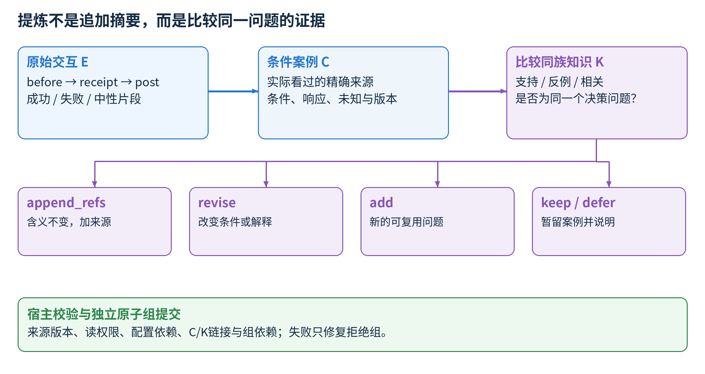
宿主自动保存每步记录。管理模型在适当时机整理其中有用的成功、失败和中性区间；并非只在失败时运行。因此可复用经验可以保留“哪种抓持完成了运送”“哪次释放后仍站立”等正向信息，而不只是禁令。
新视觉案例必须引用本次管理事务实际看过的图片。已观察到的交互响应还要对应真实before、已执行receipt与准确post；请求动作、规划结果与物体响应分开。纯遥测路径只适用于受限的机器人本体几何，不用来证明抓住或接触了外物。
| 更新选择 | 什么变，什么不变 | 典型情形 |
|---|---|---|
| append_refs | 含义、条件、参数和旧来源不变，只增加来源 | 同一观察边界再次出现；也可能增加一条反例 |
| revise | 条件、解释、用途或既有引用关系发生变化 | 新证据显示原范围太宽，需要记录更窄的适用范围 |
| add | 形成一个不同的可复用决策问题 | 此前没有覆盖的接触响应或下游访问关系 |
| keep / defer | 保留案例并说明暂不提炼的理由 | 实例有价值但缺关键前提，或已有知识不足以组织 |
| retire | 保留历史记录但退出活跃选择 | 明确失效、重复或不再应该默认交付的条目 |
新增案例必须链接到知识，或明确keep/defer；两者互斥，related链接也算已链接。多个案例影响同一知识目标时，管理模型被要求在同一组中合成一次合适操作。宿主拒绝跨组重复写同一目标或跨组写读依赖，独立组则可分别提交；失败组修复时不重放已成功的组。
配置依赖从精确历史来源解析，不能用当前配置补齐历史未知值。counter也不能在改写时悄悄消失；若要因范围变化重新归类，需要显式记录解释。原始图片与回执不被新解释覆盖，之后仍可回查。
runtime36的原始证据读取也遵守完整性：一次结果最多24576字节JSON和6张RGB，先返回能放下的完整selector前缀，再给出剩余选择。单条自身过大才无损分页，读全前不当作已获取完整证据权限。案例E的两组4张RGB读取说明了这条链如何工作。
09 动作效率：长推进与精细观察各在何处
经验不仅改变“做什么”，还可以改变“这次推进多远再看”。已经理解的自由空间可以用较长动作段，接触、入孔、保持不确定时则缩短推进范围。这里的分段由执行模型决定；本地运动规划和检查将数值目标变成可执行命令。

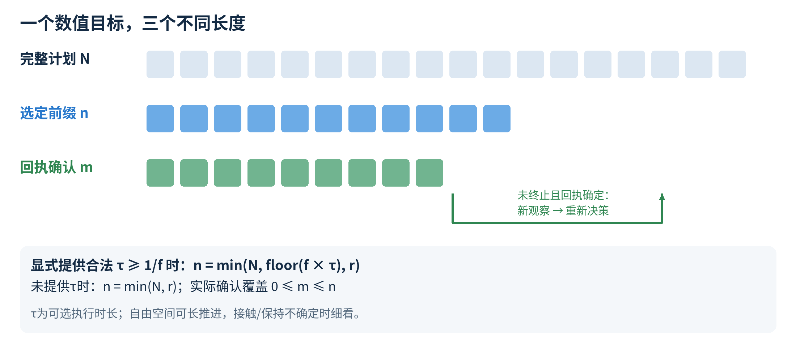
显式提供合法execute_max_s = τ（τ ≥ 1/f）时： n = min(完整计划步数 N, floor(控制频率 f × τ), 剩余环境步数 r) 未提供τ时：n = min(N, r) 0 ≤ 实际确认执行步数 m ≤ n 经验给出观察边界 → 主模型选择数值目标及可选τ → 规划/检查 → 执行前缀 → 看实际反馈
预览和规划拒绝不推进物理动作。一次完整执行也不自动意味着物体移动到目标：机器人本体可能没有准确到位，夹持物也可能相对手发生变化。因此回执先回答“执行了多少”，新观察再回答“发生了什么”。
真实机器人使用其部署的关节位置执行和状态/路径约束，推理时物理时间仍然流逝，分发前需重新检查状态新鲜度与偏差。公开几何、视觉动作参考和工具关系辅助模型选数值动作；固定检查的覆盖范围与任务成功是不同问题。此文档不把仿真的理想深度样本或局部正向响应当作真机精度保证。
10 三条实验线：同一个思想，三条独立经验链
目前的素材来自三条持续实验路线。它们复用同一类harness设计，但经验库各自独立；图中若把三条线汇成一个共享库，会改变真实实验设置。不同冻结runtime的历史episode仍按原版本、布局和调用记账保留。本文以当前runtime37解释架构，以各案例真实来源版本解释行为。
| 实验线 | 主要问题 | 当前素材怎样用于叙事 |
|---|---|---|
| 增强多任务 / enhanced_main42 | 多任务顺序推进中的身体和交互经验积累；可用RGB-D与标定几何 | 案例C：同集复盘答复与随后分阶段释放检查的对应；套娃最终官方PASS |
| 单任务重复 / single_repeat50 | 同一任务不同布局，长期保留经验并逐次利用 | 案例A：E28提炼K33，E35完整读卡及条件一致操作；案例D：同集类比与终局新K46 |
| RGB多任务 / rgb_main42 | 不依赖深度和标定投影的经验读取、身体证据与任务推进 | 案例B：装箱身体端点明确支持挂杯暂存位选择；案例E：吐司机新K13形成 |
对一个正向案例，本指南分别报告：材料是否真正送达、主模型是否明确引用、是否实际执行、观察到什么局部响应、完整任务标签是什么。整体成功率或总token的因果提升需要匹配的实验比较；本素材包不把几个案例自动汇成这样的结论。
11 案例A：旧轨迹提炼为K33，当前布局重新测量并套杆
单任务线。历史E28，当前E35；K33 = n2c1aeaca492943b@33。当前源runtime34。证据类型：完整K送达后的条件一致操作与局部正向反馈。
历史里究竟提炼了什么
E28经历过蓝块抓持、入杆不顺、重新抓持和再次定位。管理模型没有把结果压成“某个腕角度成功”，而是把端部对夹留下孔口、当前定位、物体相对抓持点的高度以及撤手后的结果分开。其核心候选是：孔口可见且提升/运送后仍保持时，重新看当前孔杆关系和非共线面高，修正关系，分段进入，再开爪、垂直撤离并复查。

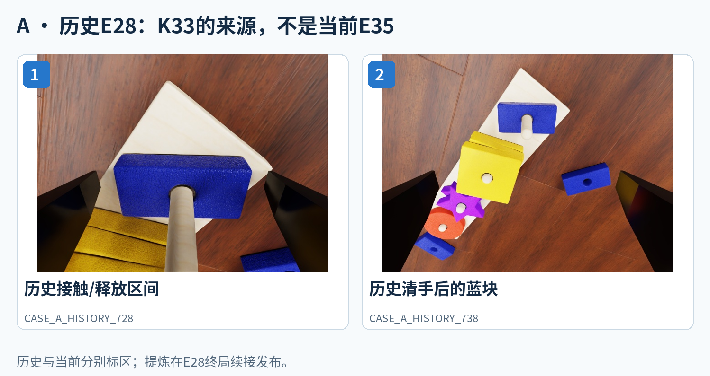
K33在E28终局续接的e000075正式发布，精确支持来源包括C240的before e2659、receipt e2695和post e2696，以及同时间面高测量。终局续接是实际历史记录的一部分，不能画成一次新的独立物理尝试。完整发布与当前送达材料分别放在evidence/K33_origin.json和selected_knowledge.json。
什么时候被读到，读到的是什么
E35对K33做精确读取，e1809交付完整statement，并实际进入后续主模型输入。它保留了抓持条件、当前反馈检查、依赖与未知项；没有把历史手高作为当前目标。随后主模型还根据当前RGB选择孔缘和面高测量，得到本布局自己的关系。
| 实际决策与反馈 | 可读成什么 |
|---|---|
| e1815/e1881抓持；e1931提升；e1966测量 | 先留下孔口并确认当前抓持/面高 |
| e1971运送；e2024浅入；e2041下放与松开 | 用当前几何决定数值目标，分段观察入杆与释放 |
| e2067撤离；e2104/2105复查 | 确认空手以后孔杆关系仍在，而不是只看闭爪或命令完成 |
| 7次运动回执，共75个环境步 | 这是实际执行覆盖，不是75次模型调用 |
腕图在浅入时见孔中白杆，撤手后蓝块仍留在杆上；当前三处面高样本接近一致。适合画成“历史关系→当前重新测量→条件化动作→卸载反馈”。公共决策没有显式说“因为K33才这样做”，所以这一例的实线证据是读卡和动作/反馈相符，不能把箭头标成已隔离证明的因果收益或节省调用。
12 案例B：装箱端点被明确引用，支持挂杯前暂存位
RGB多任务线。历史任务pack_objects_into_box，当前hang_mugs。证据类型：主模型明确引用身体数值历史、实际执行并获得正向局部反馈。它属于E层身体端点证据，不是语义K。
挂杯任务中，原来的向下接近被规划拒绝，没有执行动作。主模型需要决定附近有没有值得尝试的新身体构型，于是查询同一机体和坐标契约下的历史实测端点。结果包含先前装箱任务的三个左手端点：e1954、e1271和e2004。

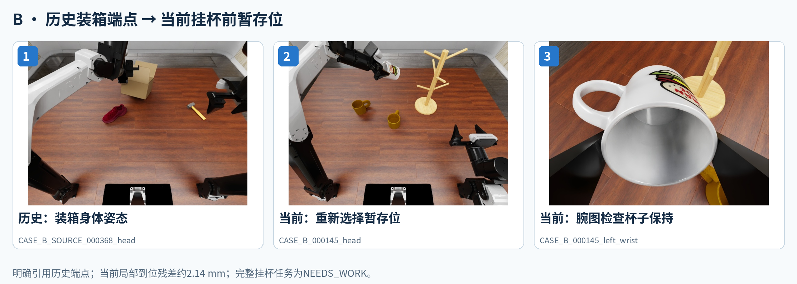
完整返回在当前e425交付。主模型e428的可见说明明确提到historical endpoints：旧向下路线被拒，历史端点提示倾斜腕姿能到附近；先选更近的暂存位，再在接触杆之前检查杯的保持几何。这里存在明确的“读到→引用→新目标”桥梁。
| 证据节点 | 实际信息 |
|---|---|
| e425 / 原生输入4bcd6c… | 三个历史端点完整送达，且保留不保证新路径的资格 |
| e428 | 明确引用historical endpoints；新暂存位由当前任务重新选择 |
| e499 | 22/22个环境动作执行，环境步115→137 |
| e500 | 当前端点位置残差约2.14 mm，头视角与腕图可见白杯仍在夹爪之间 |
| e502 | 根据保持反馈继续下一步 |
这是一条非常适合画跨任务箭头的机制证据：历史任务并不是挂杯，但身体在相关空间内的实测记录帮助当前任务选择候选。新动作同时改变了位置、pitch和yaw，夹持物也不同，所以不能把倾角单独认作原因。完整hang_mugs任务最后为NEEDS_WORK；这张图应聚焦“端点复用支持暂存位选择”，而不是“跨任务迁移完成挂杯”。
13 案例C：复盘把“都倒了”拆成不同失败时序
增强多任务线F10，sort_nesting_dolls_by_size，layout27，源runtime34。完整任务最终官方PASS；此处重点展示管理答复与后续分阶段操作的对应。
套娃已经能被抓起和运送，却在放置时出现侧倒。主模型把这个问题交给管理模型。管理模型读取后发现：最大件在后续撤离/交换以后才确认侧倒；次小件则在EEF几乎不动的opening-only区间已经倒下；另两件在开后和清手后仍站立。把这些都叫“撤手失败”，会丢掉决定下一步检查的区别。
e1983发布的完整答复把物体相对指垫的姿态、底面支持、松开后保持和撤离后保持分开。它没有给未来EEF坐标，也没有把“再降一点”“慢点开”宣称为已证明的补救；执行模型继续选择当前几何和数值目标。该复盘包含23次管理模型调用，并形成C739–746与K228。

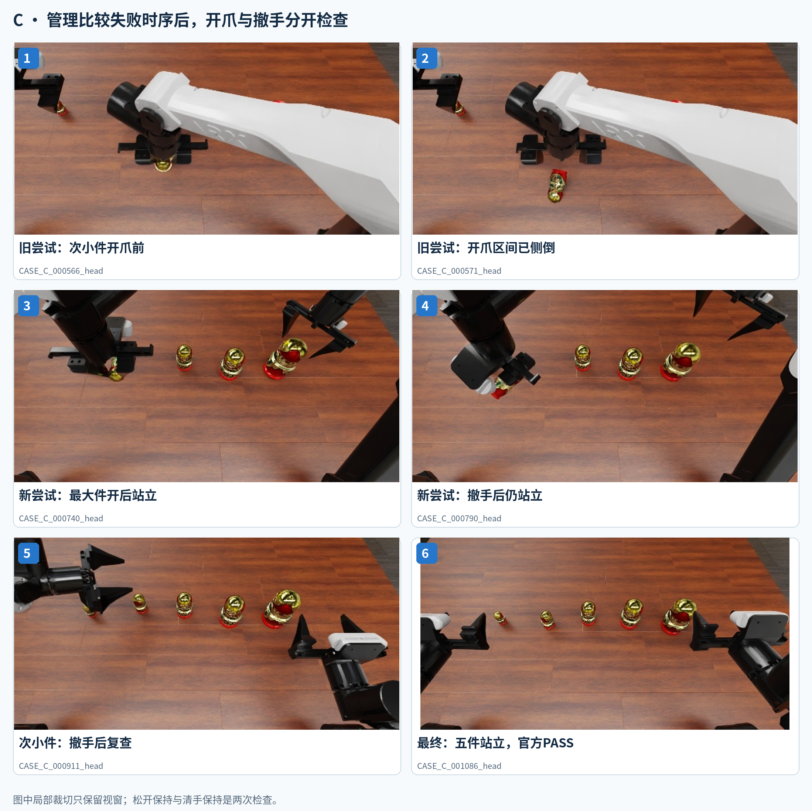
管理答复确实进入后续主模型输入。e2499明确先打开最大件，先看保持再撤离；post2550可见其仍站立。e2721又实际执行49个环境动作，post2722中右手已经离开而最大件仍站立。次小件后续也先在原位开爪检查，再在观察站立后撤离。
| 阶段 | 形成的决策信息 |
|---|---|
| 原始差异 | opening-only倒下，与撤离以后才确认倒下，不是同一种时间证据 |
| 管理答复 | 下一次应分开检查相对姿态、支持、松开保持和清手保持 |
| 后续动作 | 主模型实际作出开爪→检查→撤手→再检查的决策 |
| 继续提炼 | 终局K229等保留轴向/侧面头部抓持与稳定放置候选及此前反例 |
这里可以画“复盘答复→随后对应的分阶段检查”的箭头：答复确实送达，后续行为与其建议相符，尚未隔离证明因果作用。不能把它替换成“某个旧C235/C236导致成功”，因为没有这条明确引用桥。最终五件站立布局与官方PASS可单独展示；最终任务标签和中间局部响应不要合并成同一个徽标。
14 三个辅助案例：类比、提炼和反证怎样接上主线
D：蓝块的当前响应，怎样在同集用于紫星
S36中，已经释放的蓝块仍倾斜。主模型明确把空手闭合指垫的浅接触当作当前测试，而不是声称查到了已认证的旧补救。随后空手后的图像与面高样本支持局部趋平。处理紫星时，e3062可见说明明确类比刚才观察到的蓝块响应，同时继续要求新的观察。

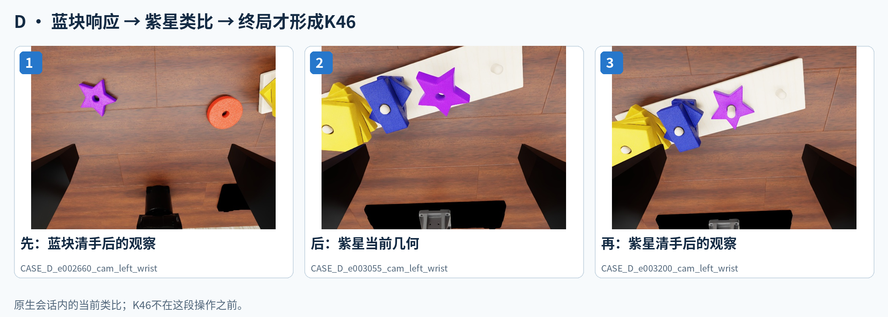
蓝块post2660、紫星post3200保留清手结果；K46直到终局e4318/4319才形成。这例说明主模型原生会话内的短期连续性与跨episode库学习如何衔接，不能画成“先检索K46，再压蓝块/紫星”。
E：吐司机如何产生一条有条件的可复用经验
RGB8 make_toast最终官方PASS，使用771/1400个环境步。其终局整理保留了杆操作受阻、部分运动、等待后仍有差距，与倾斜侧夹→实测向下运动→打开→撤手的不同响应，形成16个新案例及K13。K13回答的是接触注册与观察边界的问题，不是“任何吐司机都该这样夹”的固定步骤。

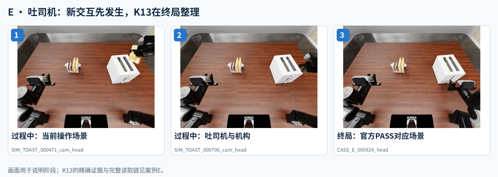
在这次学习中，两个证据组各含4张RGB。runtime36先完整交付第一组并保留第二组的精确入口，再完整交付第二组，而不是因单包8张超过6张上限就丢掉来源。完整的读写权限链是经验能稳定形成的前提。
F：查到了历史，也要允许当前反馈推翻它
S34读取C219：来源场景曾在空手恢复接近的区间观察到黄块趋平，但没有证明是按压或重新抓取造成。当前主模型明确把它作为“卸载后可能继续沉降”的候选。清开手并观察后，当前黄块仍高且倾斜，于是停止继续等待，留待后续恢复。
这一例不是“当前沉降成功”，而是条件经验帮助形成一个可以被否定的预期，并由当前反馈停止沿用。它提醒画图者：经验箭头不必只通向成功，也可以通向一次明确的适用性更新。
15 真机素材：画身体关系，不把漂亮照片当机制证明
本素材库优先从最新v9 demo的源视频抽帧，而不是从带字幕的拼接成片截屏。保留了白板填字、算式书写、倾倒、电源开关和卡片整理豆粒，另加入黄鸭、苹果等既有真机任务画面。原图不改变亮度、物体或场景；建议裁切另存为预览，原始来源和时间戳仍可追溯。

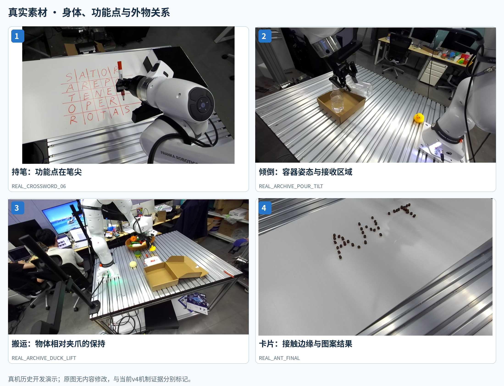
| 任务 | 图里最值得标注什么 | 应该怎样接入叙事 |
|---|---|---|
| 白板填字 / 笔写算式 | 命令端点与笔尖、安装关系、看不见的功能点、移开后结果 | Body不是认物，而是知道动作在哪个功能点发生 |
| 倾倒 | 持物容器嘴与接收嘴、姿态变化后的相对关系 | 工具延伸了末端；保持/倾倒前对准/结果检查属于不同阶段 |
| 按压开关 | 腕相机视点、被挡住的接触区域、指示区域变化 | 观察选择和物体响应检查进入动作闭环 |
| 卡片整理豆粒 | 卡片整条接触边缘、纸面和已形成图案 | 有效接触几何大于一个EEF点；方向变化要考虑完整工具 |
| 黄鸭/苹果搬运或推移 | 物体与夹爪、运送/释放、目标区域 | 展示外部交互与任务多样性 |
这些真机片段属于历史开发演示，与当前三条仿真实验线分别标记。素材时间戳是所列源视频的播放时间，部分源片已经过时间压缩；部分开发过程包含人工参考或修复。图注据可见身体关系和结果编写。它们不被列作当前v4经验复用的独立定量证据。
16 给绘图合作者的具体画图任务
图一：系统总览，只保留三条容易读的链
左侧放两张大而清楚的真机图和三至四张仿真任务图，旁边用短标签指出它们提供RGB、实测状态与执行反馈。中间画执行闭环：观察/状态→执行模型→EEF目标与夹爪/动作段→执行器→新反馈。右侧画经验管理：主模型直接检索与按需调用管理分两条边，管理模型再连经验库。
经验库用一个虚线放大框展开，不在主模型框里堆一大段文字。动作箭头用蓝/橙色，读取用绿，管理写入用紫；箭头旁只写真实传递物，如“完整条件经验”“一个待比较的问题”“C/K更新”。不要用没有来源的loss、confidence、自动成功认证符号。
图二：库结构，以真实例子解释“经验”
上排Body、下排External；横向E→C→K，底部另加过程记录条。Body可用真实持笔点与EEF关系图，External可用案例A或套娃的分阶段释放。每一列必须给出不同的信息：E是观察/测量/回执，C是具体条件下的响应，K是未来用途与反馈边界。不要把三列都画成同一句轨迹总结。
图三：选一个证据完整的复用故事，保留时间方向
若突出K的层级提炼，选案例A，分“历史E28”与“当前E35”两大区，当前区画六帧并将当前测量连到数值动作。若突出明确跨任务采用，选案例B，把历史装箱端点卡与当前挂杯暂存位对应；不要在箭头上写“挂杯成功”。若突出管理模型的价值，选案例C，用两种倒下时序与后续开/看/撤/再看的对齐图，而不是一张万能失败图。
| 图元素 | 建议写法 | 避免的误读 |
|---|---|---|
| K到主模型的边 | 条件经验 / 问题式读取 | K自动输出末端目标 |
| E身体端点到当前任务的边 | 历史实测端点 + 当前重新选目标 | 复制旧坐标就是跨本体迁移 |
| 管理答复到动作检查 | 需要区分的条件 / 应补证据 | manager直接输出数值动作 |
| 真实回执到后观察 | 实际执行覆盖 → 观察到的响应 | 执行完成等于任务完成 |
| 过程记录到任务简报 | 同任务过程候选 | 每阶段都被官方成功标签认证 |
| 三条实验线 | 三个独立经验库分支 | 所有数据共同训练/写入一个库 |
构图时先让主链靠图像和箭头成立，再补少量可解码的标签。保留一到两个局部放大，让读者看到接触区域、孔口、指垫或工作点；这些标注必须指向真实可见部位。图中若使用示意坐标或几何，应直接标“示意”，不要让读者以为是测得的接触真值。
17 素材库怎样使用、怎样追查
素材库的index.html是可离线打开的总入口。默认展示精选，再切到全部素材；支持按真机/仿真、任务、案例和关键词筛选。每张卡显示它做什么、处于哪个阶段、来自哪个相机、能支持哪类图示，并可打开原分辨率图片。CSV适合在Excel里与合作者一起筛选，JSON保留机器可读出处和hash。
| 目录 | 用途 |
|---|---|
| assets/originals/real 与 simulation | 源图原字节副本或源视频原分辨率抽帧；正式画图从这里取图 |
| assets/previews | 目录缩略图和少数建议裁切；不覆盖原图 |
| assets/sequences | 本指南使用的并列时序图；可以拆回单帧重新排版 |
| assets/diagrams | 机制说明PNG与可编辑SVG；是图解，不是新增实验数据 |
| catalog/assets.csv / assets.json | 每张图的任务、阶段、描述、相机、来源、分辨率、处理方式与hash |
| evidence/ | 案例的公开事件摘要、精确来源、实际知识记录、提炼发布入口 |
| reference_figures/ | 既有论文总图PPT和Body/External参考图；重画时可借用布局与真实素材 |
所有参考编号都能向下追到run/event或视频路径与时间戳。跨历史与当前的序列一律标区，来源不同的图片不拼成一次连续动作。素材ID是选图用的稳定名字；C/K的版本编号则属于实验库中的记录，二者不要混用。
以2026-10-30读取的冻结runtime37为架构锚点；案例分别保留其真实来源版本。没有启动新仿真或机器人动作，没有改经验库、harness或论文，也没有把未公开的模型思考块放进素材包。
18 关键来源索引与术语
| 术语 | 在这里的含义 |
|---|---|
| episode | 一次物理任务尝试；暂停/恢复或换目录不自动增加独立样本 |
| EEF target | 由执行模型选择的末端数值位置/姿态；不同平台有明确控制点定义 |
| statement / detail | 完整条件陈述 / 追加完整出处与审计信息的细读 |
| frontier / visible version | 这一读者允许看到的来源事件范围与精确记录版本 |
| default eligible | 可进入默认准备材料；不等于当前物理条件已成立 |
| receipt | 请求实际执行覆盖的回执；与物体响应分开 |
| process candidate | 带真实阶段来源的过程解释；不是可执行技能脚本 |
| 正向局部反馈 | 某个已观察环节符合候选预期；与整任务标签、因果性能收益分开 |
架构依据：CURRENT_HARNESS.json及冻结runtime37的manager.py、session.py、library.py、hybrid.py、body_index.py、preparation.py、execution.py、motion_core.py、episodes.py。具体行号、版本和hash见evidence/code_sources.json。
案例A依据S35_K33_FIRST_BLUE_ROOT_REVIEW.json、E28终局发布和E35实际公开事件；案例B依据LEARNING_EFFECT_REVIEW_20261029.json中的跨任务身体端点链；案例C依据F10_REVIEW_ACTUAL_FEEDBACK_ROOT.json与F10_ROOT_FINAL_REVIEW.json。辅助案例分别对应S36_POSITIVE_RECOVERY、S36_ASTRA_FINAL_REVIEW、RGB8_ROOT_FINAL_REVIEW及S34_C219_ACTUAL_USE审阅记录。
素材来源：真机v9 demo的asset_manifest.json与源视频、既有论文真机图片；仿真为对应run下的原始observations及已核真实素材归档。来源路径是追溯入口，不要求合作者拥有相同服务器目录：本包已带上所有用于说明和选图的图片以及必要的证据摘要。